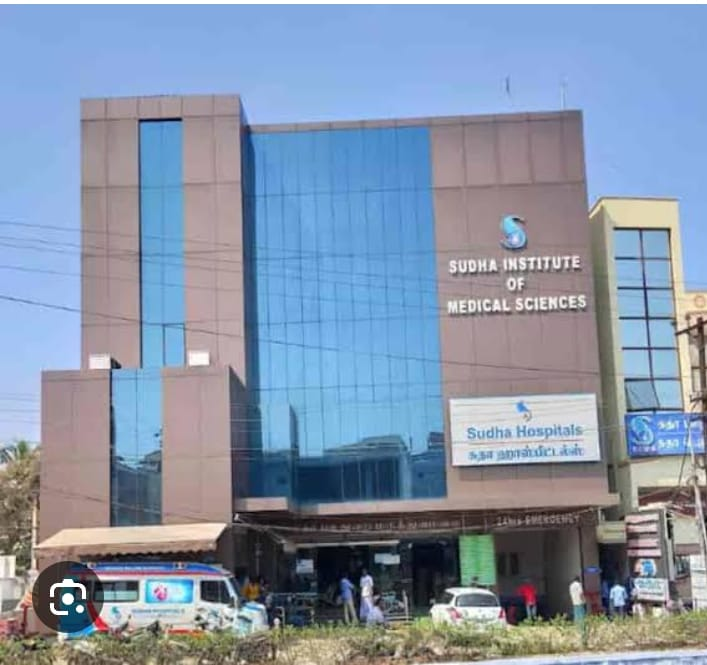
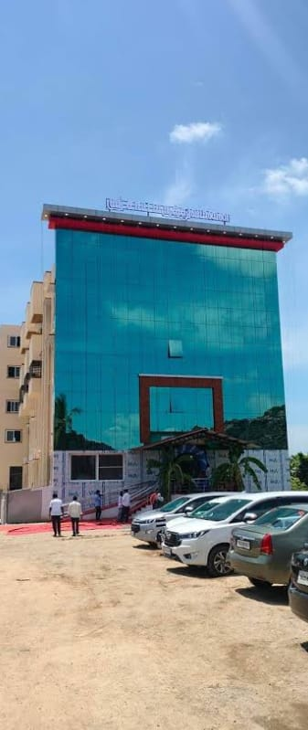

Hospitals
Government and Public Hospitals
- Government Hospital Gingee: Located on Tindivanam Salai (Tindivanam Main Road), Gingee Bazaar. It functions as a key taluk hospital with an expanded bed capacity of over 100 beds providing general care, emergency services, X-ray, and ECG
- E.K.R. Multi Speciality Hospital:Located opposite Tiruvannamalai Road, Thalavanur, Gingee. A major private multi-specialty center in the area handling general and emergency health care needs
- Surya Hospital: Located on the Gingee-Tindivanam Road, Gingee Bazaar, offering general consultations and localized care
ABOUT HospitalS
The healthcare ecosystem of the Gingee Assembly Constituency in the Viluppuram district consists of a mix of public and private healthcare facilities. Central to public health services is the Government Hospital Gingee located in Sakkirapuram, which operates as a critical Taluk Hospital featuring over 80 beds, a dedicated operating theatre, and specialities like general medicine, ENT, and TB care. This is supported across the rural constituency by local facilities like the Government Primary Health Center in Sathiyamangalam to handle grassroots medical needs. Alongside the public sector, the area has several private multi-speciality setups offering advanced treatments. Notable hospitals include E.K.R. Multispeciality Hospital, which provides crucial ICU care and endoscopy treatments; DhanVidh Specialty Hospital, running 24/7 emergency and trauma care alongside diagnostic services like CT/MRI scans; and PRG Hospital, which specializes in urological and laparoscopic surgeries. Maternal and childcare demands are addressed by setups like Sanjeevi Gastro and Maternity Care Centre, while alternative treatment choices are represented by centers like Imayam Siddha Hospital.Map data ©2026 Terms200 m